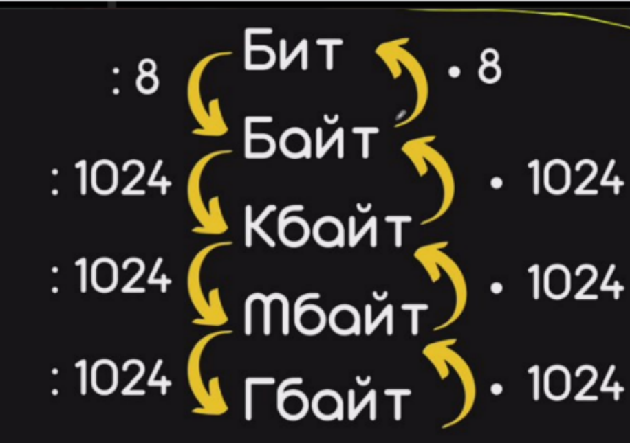

Переводим единицы
В одном байте 8 бит. Чтобы перевести биты в байты, раздели на 8; чтобы перевести байты в биты, умножь на 8.

На схеме при переходе к большей единице делим, к меньшей — умножаем.
Сначала изучи короткий конспект и потренируйся, затем реши задания. Пиши прямо на странице и после проверки разбери ошибки.
✦ Конспект + тренажёр + 14 заданийВ одном байте 8 бит. Чтобы перевести биты в байты, раздели на 8; чтобы перевести байты в биты, умножь на 8.

Определи вес одного символа в байтах. Раздели количество бит на 8.
Найди «хвост». Посчитай, сколько символов и байтов занимают удалённые или добавленные запятая и пробел — либо только пробел.
От изменения размера в байтах отними вес «хвоста». Оставшиеся байты переведи в символы: раздели на вес одного символа. Найди слово нужной длины.
В кодировке КОИ-8 каждый символ кодируется 8 битами. Вова написал текст (в нём нет лишних пробелов):
«Школьные предметы: ОБЖ, химия, физика, алгебра, биология, география, литература, информатика».
Ученик удалил из списка название одного предмета, а также лишние запятую и пробел – два пробела не должны идти подряд. При этом размер нового предложения оказался на 13 байт меньше. Какое название предмета вычеркнули?
1. 8 бит : 8 = 1 байт на символ.
2. Запятая и пробел — 2 символа, значит, «хвост» занимает 2 байта.
3. 13 − 2 = 11 байт осталось на слово. Один символ весит 1 байт, значит, в слове 11 букв.
В исходном списке это информатика.
Это тот же пример, что и в задании 1 ниже: используй его как образец.
Выбери «Ручка» или «Маркер», затем рисуй пальцем в условии или в поле под ним. Чтобы снова прокручивать страницу в этих областях, включи «Прокрутка». Кнопка «Отменить» убирает последнюю линию в этом задании.
Ответы и рисунки сохраняются в этом браузере на устройстве. При очистке данных браузера они могут исчезнуть.
Нажми кнопку — увидишь количество и процент правильных ответов. После проверки появятся подробные разборы под каждым заданием.
Результат сам никуда не отправляется: скопируй его и отправь преподавателю.